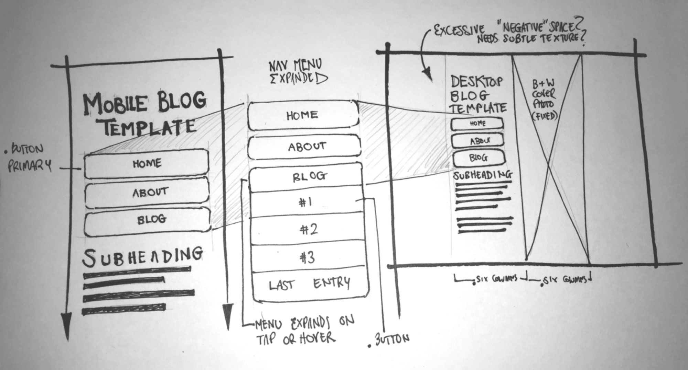

What is a responsive site, and why is responsiveness important?
A responsive website is one which can dynamically and instantly adapt to the screen size it is being viewed on. Responsiveness is increasingly important as the array of different devices with which the web is viewed, as well as the number of different screen sizes and aspect ratios with which it is viewed, continues to grow.
What is mobile first design, and why is that kind of design important?
Mobile first design serves the least complicated, feature-sparse version of a website first, adding more memory and process-intense features as the screen (and therefore presumed power of the host device) grows.
What are frameworks? What are their pros and cons?
A CSS framework, like the Skeleton CSS boilerplate we're working with in the current assignment, provides - in a normalize.css document, the cross-browser CSS display regulation which allows styling to retain its character across platforms - as well as basic styling so a designer may (pro) save time by not having to recode the same information and styling every time. Frameworks however (con) do a lot of the legwork for the designer, meaning that they may not be the ideal place to learn CSS from, I imagine this is why we don't stat with frameworks.
What a wireframe is and why we use it?
A wireframe is a prototype of a website, often hand-drawn simply with minimal-to-no colour, so one can plan the layout and functionality of a site. See mine below:
Which aspects of your wireframe(s) you found difficult to implement, and why
The navigation menu was a real workout in CSS selectors. Shayan's amazing selector sorcery was a big help, as it was the first example of CSS selectors I'd seen in the wild which actually made sense to me.